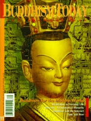

You can order this issue from the Diamond Way USA Dharma Shop.
Number 11 — 2002
Focus: Buddhism for the Modern World
Dharma Practice in Modern Life
Kunzig Shamar Rinpoche
Practicing the Dharma Effectively in the Contemporary World
Gyaltrul Rinpoche
Meditation in Everyday Life
Jigme Ripoche
Retreats - a Question of Maturity
Lama Ole Nydahl
Time and Now
Steve Hagen
Excerpts from The Quantum and the Lotus
A Journey to the Frontiers where Science and Buddhism Meet
Matthieu Ricard & Trinh Xuan Thuan
Buddhism and the Internet
Tasso Kallianiotis
Features
The Intermediate States, Part IV: The Bardo of Becoming
Lopon Tsechu Rinpoche
Columns
DHARMA: Meditation on Light and Breath and Rainbow Light Meditation
PRACTICE: A Song of Karma Thrinlepa
VIEW: Children and Buddhism
by Maxi Kukuvec
DEPARTMENTS
EDITORIAL
SPOTLIGHT: Kunzig Shamar Rinpoche
BOOK REVIEW: Colette DeDonato Do You Need a Guru?: M.Caplan
GLOSSARY: Basic Buddhist Terms
EVENTS: Marpa Course, Kassell, Phowa in Spain